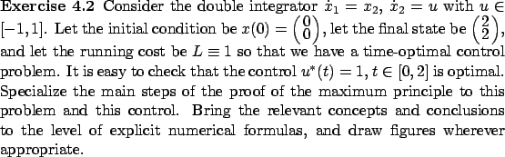

Next: 4.2.1 From Lagrange to
Up: 4. The Maximum Principle
Previous: 4.1.2 Basic variable-endpoint control
Contents
Index
4.2 Proof of the maximum principle
Our proof of the two versions of
the maximum principle stated in the previous section will be divided
into the following steps.
- Step 1: From Lagrange to Mayer form
As the first step, we will pass from the given Lagrange problem to an equivalent
problem in the Mayer form by appending an additional state (this technique
was already discussed
in Section 3.3.2).
- Step 2: Temporal control perturbation
In the next step, we will apply a small perturbation to the length of the time
interval over which the optimal control is acting, and will characterize the
resulting perturbation of the terminal state.
- Step 3: Spatial control perturbation
In this step, we will replace the optimal control on a small time interval
by an arbitrary constant control, and will study how the resulting state
trajectory deviates from the optimal one at the end of this time interval.
(This perturbation will be reminiscent of the one
we used in the proof of the Weierstrass necessary condition in Section 3.1.2.)
- Step 4: Variational equation
- We will then derive a linear differential
equation which propagates, modulo terms of higher order, the effect of
spatial control perturbations up to
the terminal time. This is the variational equation (we already encountered
this terminology in Section 2.6.2).
- Step 5: Terminal cone
- Combining the effects of temporal and spatial
control perturbations, we will construct a
convex cone, with vertex at the terminal state of the optimal trajectory,
which describes infinitesimal directions of all
possible
perturbations of the terminal state.
- Step 6: Key topological lemma
- Next, we will use optimality to show
that the terminal cone does not contain in its interior
the direction of decreasing cost.
- Step 7: Separating hyperplane
- We will invoke the separating hyperplane
theorem to establish the existence of a hyperplane that passes through the terminal
state and separates the terminal cone from the direction
of decreasing cost. We will define the adjoint vector at the terminal
time as the normal to this separating hyperplane.
- Step 8: Adjoint equation
- We will then
introduce the adjoint equation which propagates
the adjoint vector up to the terminal time; it will
match the second canonical equation, as required by the maximum principle.
- Step 9: Properties of the Hamiltonian
- We will verify that the Hamiltonian
maximization condition holds and that the Hamiltonian is identically 0
along the optimal trajectory. This will conclude the proof of the maximum
principle for the
Basic Fixed-Endpoint Control Problem.
- Step 10: Transversality condition
- Finally, we will prove
the maximum principle for the Basic Variable-Endpoint Control Problem by refining
the separation property from steps 6 and 7 and arriving at the transversality
condition.
Each of the subsections that follow corresponds to one step in the proof.
Until we reach step 10 in Section 4.2.10,
we assume that we are dealing
with the Basic Fixed-Endpoint Control Problem, i.e.,
 . The next exercise is meant to be worked on in parallel with following the proof.
. The next exercise is meant to be worked on in parallel with following the proof.

Subsections
Next: 4.2.1 From Lagrange to
Up: 4. The Maximum Principle
Previous: 4.1.2 Basic variable-endpoint control
Contents
Index
Daniel
2010-12-20